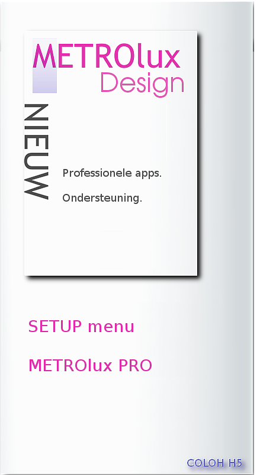

Versie 1.0.0.16 ©2014 A.Greven
HET NIEUWSTE INTERACTIEVE SETUP MENU
Geen kennis van LINUX nodig.

NIET MEER ZOEKEN NAAR SOFTWARE
Geen software kennis of selectie meer nodig.
Een klik op de applicatie die ontbreekt is voldoende:
HET METROluxPRO SET_UP MENU
MAAKT UW COMPUTER COMPLEET
Eenvoudiger kan niet..

 Nu bestellen..
Nu bestellen..
 Ik wil adverteren..
Ik wil adverteren..
Ik wil sponsoren..
Met een enkele klik op de door u geselecteerde applicatie,start de standaard grafische installeer tool van Linux en vraagt u of dit de juiste keuze is en begint na dat u op ja hebt geklikt met installeren.
Zonder dat u naar het Pro menu gaat kunt u al testen of de applicatie juist werkt.
U heeft bovendien de volledige controle welke applicaties u wel of niet wenst.
Wel fijn om te weten dat na een instalatie van nieuw systeem, u weet welke software u gebruikt:
--U heeft geen onnodige software op uw systeem geinstalleerd--.
Bent u klaar en wilt u later alsnog een applicatie in uw menu? U kunt eenvoudig deze procedure herhalen.
De software hiervoor is voorgeinstalleerd in dit menu.
Wanneer u andere software of applicaties wenst die niet in het menu zijn geintegreerd dan kunt u contact met ons opnemen en wij kunnen u op afstand hiermee helpen.
De voorzieningen hiervoor zijn al in dit menu gebouwd.
U kunt contact opnemen door een mailbericht aan ons te sturen met de volgende link:
Wijzigen METROlux-menu
Wilt u het professionele menu (versie 1.1.0.16)?
Een bijdrage doen?
Ons sponsoren met reclame of hebt u een andere vraag?
Neem dan contact op met dhr A.Greven telefoon +31(0)633962565 of stuur een mailbericht met uw vraag naar:
METROlux-beheer
|
Dit menu (betaalde versie) is voorzien van software,waarmee wij of uw partner
hulp kunnen bieden en problemen online oplossen.
De performance van het menu is ons een groot goed en dit willen wij beschermen.
EXTRA OPTIE METROlux menu:
Libre-Office cursus PRO voor effectief gebruik van het volledige Libre-office pakket.
Dit pakket is in samenwerking met docenten opgezet en in de praktijk getest.
Het pakket met cursus materiaal verteld over de werking met Microsoft office functies en Libre office functies zodat bij beiden hetzelfde resultaat kan worden gerealiseerd bij minimale basiskennis.
3D programmas en uitleg over 3Dprinters, filament, en diverse sites met content en tips om direct aan de slag te gaan.
Volledige installer set-up hulp gereedschap welke alle benodigde programmas en geselecteerde applicaties automatisch voor u kan installeren, dus niet meer zoeken, alles is al voor u uitgezocht..
Cloud voorziening op uw systeem met de keuze een account af te sluiten waarbij ook uw backups veilig in de cloud is te bereiken.
Extra software voor volledige functionaliteiten als online hulp.
Muziek componeren met de meest geavanceerde software synthesizers.
OVERZICHT EXTRA OPTIES:
Sectie 1.10.33 handleiding en tips.
sectie 1.10.34 Extra installatie opties en automatische installer --niet beschikbaar in de gratis versie--.
sectie 1.10.35 Cursus Libreoffice Writer --niet beschikbaar in de gratis versie--.
sectie 1.10.36 Cursus Libreoffice Calc --niet beschikbaar in de gratis versie--.
sectie 1.10.36 Cursus Libreoffice Impress --niet beschikbaar in de gratis versie--.
sectie 1.10.38 Cursus Libreoffice Draw zijn --beschikbaar in de gratis versie--.
sectie 1.10.39 Cloud voorzieningen --niet of beperkt beschikbaar in de gratis versie--.
sectie 1.10.40 3D printing voorzieningen --zijn beperkt beschikbaar in de gratis versie--.
|
Koop nu de PRO Versie 1.0.0.16Maak met dit menu uw computer compleet.
Software voor professionals.
|
Beste gebruiker,
Wij bedanken u voor uw interesse in het METROlux menu.
|
GEBRUIK NU ALLE FUNCTIES,met de betaalde versie en maak kennis met de vele extras in uw menu als:
Uitgebreide gebruikers handleidingen tips met uitleg en handige links,Libre-office cursussen,tips en extra functies als cloud voorzieningen en 3D printing.
En meer modules die het gebruikers gemak en de snelheid van het menu verbeteren.
Installatie TIP:
Om het METROlux menu te gebruiken zoals het is ontworpen moet Gnomenu en cairo-dock zijn geinstalleerd.
Echter is alleen Gnomenu installeren voldoende om in gnome Shell alle funties te kunnen gebruiken.
Dit met uitzondering van de applet die altijd beschikbaar is in de linker hoek om het menu op te roepen.
Het design en de locatie van de applet is bewust gekozen om optimaal gebruik te maken van het menu.
U bent direct na het activeren van het menu bij de hoofdmappen en de kantoor applicaties.
De applet is altijd zichtbaar op elk moment en in elke applicatie.
Ook wanneer u aan het surfen bent op internet kunt u met deze applet uw menu activeren.
Voor aanpassingen en activeren van uw eigen tiles kunt u contact opnemen met:
dhr A.Greven telefoon +31(0)633962565 of stuur een mailbericht met uw vraag naar:
METROlux-beheer
Benodigde software:
Alle tiles die op het menu zichtbaar zijn zijn vooraf ingesteld om de bijbehorende applicaties te starten.
Indien er een applicatie niet start dan is deze niet op uw systeem geinstalleerd.
Om deze installatie automatisch te verzorgen kunt u de betaalde versie aankopen.
|

|